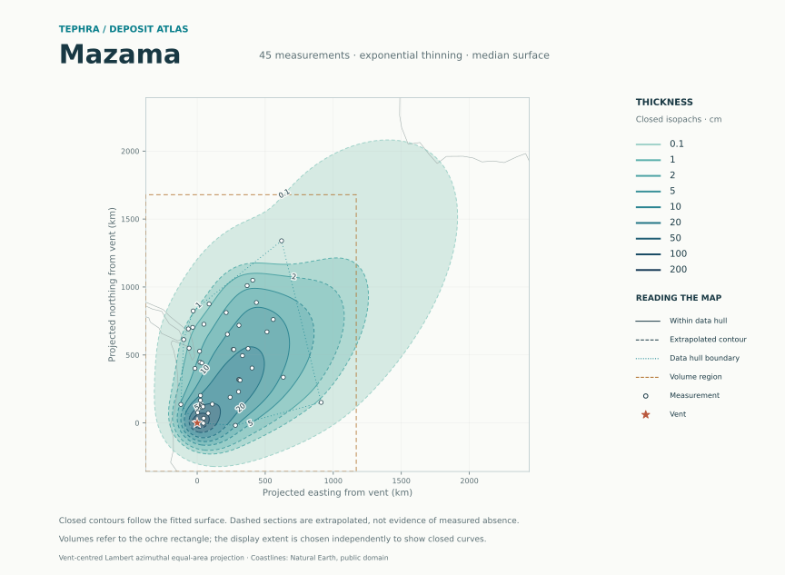
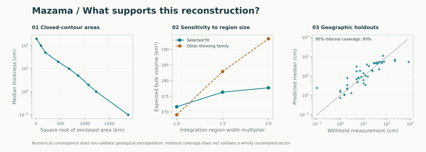

Mazama
A reproducible reconstruction from measured thicknesses, with closed isopachs and explicit limits on extrapolation.
exponential thinningNo invented observationsRegional volume · total unresolved


Volume, with a defined scope
The headline integrates expected thickness over the ochre rectangle: easting -378 to 1,169 km and northing -357 to 1,679 km in the vent-centred equal-area projection. This region is selected from the observation locations, independently of the map extent.
The integral of the median thickness surface over the same region is 159.0 km³. That is a different quantity from the median of total random volume. Neither quantity is dense-rock equivalent.
| Integration region | Selected fit · km³ | Other family · km³ | Numerical refinement |
|---|---|---|---|
| 1× widths | 171.7 | 169.1 | Passed |
| 1.5× widths | 176.3 | 182.9 | Passed |
| 2× widths | 177.7 | 193.4 | Passed |
Fit and numerical checks
Geographic holdouts: 93% coverage for nominal 95% observation intervals.

Closed-contour areas and resolution checks
Areas include all resolved components and subtract enclosed holes. Unclosed levels have no reported area. Small features are refined locally. The last column compares the final area grid with a grid of half the resolution; per-level scope is recorded in the CSV.
| Thickness · cm | Status | Area · km² | Grid change |
|---|---|---|---|
| 0.1 | Closed | 3,549,752.9 | 0.0% |
| 1 | Closed | 1,514,667.8 | 0.0% |
| 2 | Closed | 1,147,277.9 | 0.0% |
| 5 | Closed | 743,028.4 | 0.0% |
| 10 | Closed | 456,606.2 | 0.0% |
| 20 | Closed | 205,543.0 | 0.0% |
| 50 | Closed | 36,926.5 | 0.0% |
| 100 | Closed | 10,359.2 | 0.2% |
| 200 | Closed | 133.3 | 0.0% |
| 500 | above resolved peak | — | — |
Conditional volume uncertainty
The joint sampling grid gives an approximate conditional 95% interval of 135.9–219.4 km³. It holds the fitted parameters and thinning family fixed. Quantile convergence has not been established; this is a sampling diagnostic, not a calibrated eruption-volume interval.
Interpretation and limitations
- Intervals condition on estimated trend/covariance and model selection; they omit parameter and model uncertainty.
- Finite-domain volume is not total erupted volume. Unsampled tails are assumption-dependent.
- Legacy positive values are accepted as measurements unless flagged Pseudo; historical trace/absence encodings need provenance review.
- All volume estimates are bulk deposit volumes; no deposit-density conversion to DRE is available.